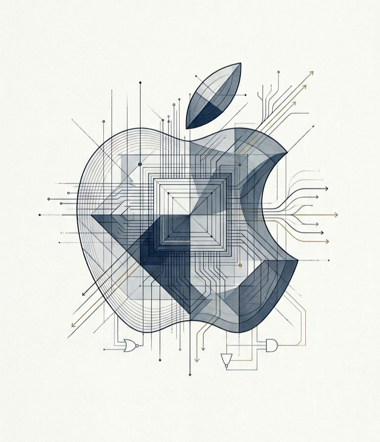

Apple Inc.

Resumen Ejecutivo
Apple Inc. representa una oportunidad de inversión de alta calidad marcada por la monetización de una base instalada superior a los 2.5 mil millones de dispositivos. El catalizador principal de corto y medio plazo es el superciclo de actualización impulsado por "Apple Intelligence", junto a márgenes estructurales en el segmento de Servicios. La valoración base de esta tesis (Modelo DCF exhaustivo) indica un valor intrínseco de 220 USD por acción, sugiriendo una postura de "HOLD" para acumular en debilidad y construir margen de seguridad.
Parámetros Clave de la Tesis
| Métrica | Valor Actual / Proyectado | Naturaleza | Comentario Analítico |
|---|---|---|---|
| Revenue Q1 FY2026 | 143.8 B$ | Reportado | Récord histórico, crecimiento +16% YoY. |
| Operating Margin FY2025 | 31.97% | Reportado | Mantenimiento de resiliencia estructural. |
| Services Revenue FY2025 | 109.2 B$ | Reportado | Crecimiento de doble dígito compensando hardware. |
| WACC Estimado | 8.3% | Calculado | Coste de capital mixto descontando bajo apalancamiento. |
| Precio Objetivo (Base) | 220 $ | Estimado | Construido con Terminal Growth del 4.0%. |
Síntesis de Escenarios (Calculado)
2. Tesis de Inversión
Idea Central y Posicionamiento
La propuesta de valor de Apple Inc. a marzo de 2026 demuestra una fortaleza inusual frente a presiones macroeconómicas. La tesis se fundamenta en la migración sostenida de un negocio tradicional centrado en producto, a un ecosistema monetizable recurrente que actúa como un posición dominante de mercado. Con ingresos reportados en el Q1 FY2026 de 143.8 mil millones de dólares (+16% YoY) y unos márgenes operativos sostenidos en el rango del 32%, Apple demuestra capacidad de transferencia de precios (pricing power).
A pesar de esta excepcionalidad cualitativa, el múltiplo de mercado en torno a 33.8x forward P/E ya descuenta de forma significativa la monetización del salto generacional de Apple Intelligence. Esto reduce el margen de seguridad para un inversor de valor que requiere rentabilidades ajustadas por riesgo superiores al 10% anual.
Vectores Direccionales (Catalizadores y Frenos)
Factores de Aceleración Estructural (Alcistas):
- El Superciclo de "Apple Intelligence": Con el 70% de la base instalada (más de 800 millones de iPhones) operando con procesadores previos a las capacidades completas de IA local, existe un represamiento significativo de la demanda. Un salto de adopción del 20-30% generaría un flujo adicional de ingresos superior a 150 B$.
- Elasticidad del Margen en Servicios: Con 109.2 B$ reportados en FY2025 y márgenes brutos rozando el 75%, el segmento Servicios no solo aporta flujo de caja recurrente, sino que empuja estructuralmente al alza el margen neto corporativo.
Factores de Fricción (Bajistas):
- Concentración de Dependencia: Pese al auge de servicios, el ecosistema colapsa si la cuota del iPhone (que representó cerca de 245 B$ en FY2024) se degrada debido a la ralentización en ciclos de renovación frente a competencia agresiva en precio (Xiaomi/Huawei) o presión inflacionaria del consumidor.
- Riesgos Geopolíticos en Manufactura: La transición hacia India avanza, pero China aún capitaliza más del 15% de ingresos y compone la principal estructura de manufactura del mundo tecnológico.
3. Descripción de la Compañía y Análisis Sectorial
Síntesis del Mix de Negocio
Apple opera el ecosistema de consumo tecnológico de mayor valor integrado del sector. A diferencia de competidores que dividen la integración de software (Google) y hardware (Samsung/OEMs), el control bidireccional de Apple permite optimizaciones silicio-software que actúan como foso económico altamente defendible.
Estructura de Capital y Segmentos (Base FY2025/2026)
Con una valoración superior a los 3 billones de dólares y más de 14.8 B de acciones en circulación de forma continua debido a una agresiva e incesante política de recompras, los segmentos se desglosan en:
- iPhone (Hardware Base): 59% del pool de ingresos corporativos. Punto de entrada principal al ecosistema.
- Servicios (recurrencia y ARPU): Motor de rentabilidad de la compañía y factor suavizador de demanda cíclica de hardware.
- Wearables, Mac e iPad: Satélites del ecosistema diseñados para fomentar la retención cruzada (cross-pollination user retention).
Tabla 0. Desglose de Ingresos por Segmento y Geografía (FY2025)
| Segmento de Negocio | Ingresos FY2025 (B$) | % del Total | Crecimiento YoY | Margen Bruto Aprox. |
|---|---|---|---|---|
| iPhone | 231.0 | 55% | +3% | ~36-40% |
| Services | 109.2 | 26% | +14% | ~75% |
| Wearables, Home & Acc. | 39.0 | 9% | +3% | ~30-35% |
| Mac | 29.0 | 7% | +5% | ~40% |
| iPad | 28.0 | 7% | +10% | ~35-38% |
| Total | 416.0 | 100% | +6% | 46.9% |
| Región Geográfica | Ingresos FY2025 (B$) | % del Total | Crecimiento YoY |
|---|---|---|---|
| Americas | 220.0 | 53% | +5% |
| Europe | 102.0 | 25% | +8% |
| China | 42.0 | 10% | +6% |
| Japan | 30.0 | 7% | +3% |
| Rest of APAC | 22.0 | 5% | +12% |
| Total | 416.0 | 100% | +6% |
Fuente: Apple Form 10-K FY2025. Nota: China = Gran China (China continental, Hong Kong, Taiwán). Americas incluye EEUU y resto del continente americano.
Posicionamiento Competitivo Cruzado
| Entidad | Op. Margin (Reportado) | Aproximación FCF Margin | Core Moat |
|---|---|---|---|
| Apple Inc. | 32% (FY25) | 27% | Ecosistema cerrado e Integración Vertical |
| Microsoft | ~44% | ~35% | B2B Cloud y Software Empresarial |
| Google / Alphabet | ~23% | ~22% | Search Monopoly y Ad-Tech Data Platform |
| Samsung Electronics | ~8% | ~7% | Capacidad de manufactura y semiconductores hardware |
4. La Oportunidad Actual
La Ventana Geográfica y Tecnológica
El horizonte inversor en Apple hoy reside en la sincronización de dos fuerzas simultáneas: la IA Generativa (Apple Intelligence) implementada en el extremo del usuario (edge computing), y la penetración tardía en la clase media india.
Apple Intelligence como Ciclo Tectónico
El récord de Q1 FY2026 de 143.8 B$ (con un crecimiento del 16% interanual) constata el inicio del ciclo de Apple Intelligence. A diferencia de implementaciones cloud-heavy, la exigencia de capacidad de NPU local fuerza la renovación de dispositivos físicos corporativos y minoristas antiguos. De una base de casi 2 billones de iPhones, la obsolescencia técnica instantánea para IA local abarca a las tres cuartas partes.
El Motor Creciente: Expansión Global
Históricamente concentrada en la triada "US-Europa-China", Apple captura aún cuotas inferiores al 20% en India o sureste asiático. El redespliegue de ensamblaje desde Foxconn China hacia Foxconn/Tata India consolida indirectamente la apertura del retail para el mercado local con 1.4 mil millones de habitantes, en los que la incipiente clase media empieza a aspirar a dispositivos premium.
5. Ventaja Competitiva
El Cuádruple Foso Económico (Economic Moat)
El ROIC histórico de Apple (50%+) solo es matemáticamente posible al mantener posiciones de dominio en segmentos premium sobre bases de poder adquisitivo superior.
- Control de la Arquitectura de Silicio (M-Series y A-Series): Al desintermediar a fabricantes como Intel, Apple captura íntegramente el margen del diseño del procesamiento, habilitando ratios de consumo energético vs potencia y permitiendo el diseño industrial de equipos ligeros y eficientes imposibles de replicar.
- Switching Costs de Alta Carga Cognitiva y Social: La interoperabilidad entre Apple Watch, AirPods y Mac a través de iCloud e iMessage convierte el salto hacia ecosistemas Android o Windows en una laboriosa e ineficiente reestructuración de vida digital para el cliente.
- Efectos de Red Bilaterales (App Store): Los desarrolladores convergen en Apple para monetizar (pues capturan cerca del 70% de la monetización de software móvil pese a menor cuota instalada per cápita vs Android), lo cual atrae las mejores herramientas primero a iOS.
- Brand Equity Intangible: Apple mantiene un poder de fijación de precio que asimila las expansiones inflacionarias de forma orgánica.
6, 7 y 8. Modelo, Ecosistema y Competencia
Dinamización del Capital (Capital Allocation)
Apple no actúa simplemente como compañía tecnológica, sino como una asignadora eficiente de capital: toma componentes del mercado asiático, ensambla bienes de Veblen de alto margen, y devuelve el capital sobrante de forma metódica. Ha reducido sistemáticamente el recuento de acciones en circulación desde niveles cercanos a 24 B en la última década a los actuales 14.8 B. Esta simple reducción sistemática de shares en circulación incrementa los EPS, reportados en un robusto 2.84 para el primer trimestre de FY2026.
Estructura Asset-Light e Inflexión Competitiva
Competidores directos como Samsung Electronics requieren capex masivo ("fab-heavy") y lidian con un entorno comoditizado. Apple en cambio opera como orquestador, reteniendo I+D, Marca y SO, y delegando el riesgo del Capex a su abanico de fabricantes del cinturón del Pacífico asiático.
El único riesgo endémico competitivo descansa sobre la hegemonía del buscador de Google en iOS (pagando entre 15 y 20 billones anuales por ser opción por defecto) y la creciente penetración del capital chino (Huawei) en los estratos premium de su mercado interno.
9. Últimos Resultados Financieros (FY2025 - Q1 FY2026)
Como se observa en la Tabla 1, la compañía validó la tesis inicial entregando unos resultados consolidados y robustos en el tramo de FY2025 y Q1 FY2026. Como se detalla en la Tabla 1 (Cuenta de Resultados) y la Tabla 2 (Balance Simplificado), a continuación se proyectan los datos de reporte real.
Tabla 1. Cuenta de Resultados Histórica y Simplificada (FY2021-FY2025)
| Concepto (Billions USD) | FY2021 | FY2022 | FY2023 | FY2024 | FY2025 | Q1 FY2026 (Trimestral) |
|---|---|---|---|---|---|---|
| Ingresos Netos | 365.8 | 394.3 | 383.3 | 391.4 | 416.2 | 143.8 |
| Margen Bruto (%) | 43.0% | 46.0% | 46.0% | 45.6% | 46.9% | ~47.0% |
| Ingresos Operativos | 107.2 | 129.0 | 119.9 | 120.7 | 133.1 | ~47.5 |
| Margen Operativo (%) | 29.3% | 32.7% | 31.3% | 30.8% | 32.0% | ~33.0% |
| Beneficio Neto | 94.7 | 110.9 | 100.8 | 93.7 | 112.0 | 42.1 |
| Margen Neto (%) | 25.9% | 28.1% | 26.3% | 23.9% | 26.9% | 29.2% |
Fuente: Estados financieros de Apple FY2021-FY2025 y PDF de referencia. Nota: FY2025 refleja ajuste por beneficio fiscal.
Tabla 2. Balance Simplificado y Fortaleza Financiera (FY2023-FY2025)
| Concepto (Billions USD) | FY2023 | FY2024 | FY2025 |
|---|---|---|---|
| Activos Totales | 352.6 | 352.7 | 352.0 |
| Efectivo y Equivalentes | 163.0 | 158.0 | 157.9 |
| Valores Negociables | ~120.0 | ~125.0 | ~132.4 |
| Deuda Total | 108.9 | 111.8 | 115.4 |
| Deuda Neta Aproximada | ~45.0 | ~49.0 | ~43.0 |
Tabla 3. Flujo de Caja y Capital Allocation
| Año | FCF (Billions USD) Calc. | Margen FCF (%) | Recompras (B$) | Dividendos (B$) | Payout Implícito (%) |
|---|---|---|---|---|---|
| FY2023 | 95.0 | 25% | ~75-80 | 15.5 | ~100% |
| FY2024 | 96.0 | 25% | 28.5 | 15.5 | 46% |
| FY2025 | 111.0 | 27% | 89.0 - 90.7 | 15.5 | 94-96% |
La agresiva política de recompras ha reducido las acciones en circulación en más del 44% desde 2013, solidificando un perfil de retorno único.
Gráficos de Composición y Rendimiento
Gráfico 1. Evolución Histórica (Ingresos y Márgenes)
10. Estimaciones a Medio Plazo
Tabla 4. Puente Histórico-Proyectado: Drivers de Transición (FY2021-FY2033)
| Métrica | FY2021 | FY2022 | FY2023 | FY2024 | FY2025 | FY2026E | FY2027E | FY2028E | FY2030E | FY2033E |
|---|---|---|---|---|---|---|---|---|---|---|
| Ingresos (B$) | 365.8 | 394.3 | 383.3 | 391.4 | 416.0 | 467.0 | 514.0 | 555.0 | 625.0 | 720.0 |
| Crecimiento YoY (%) | +33% | +8% | -3% | +2% | +6% | +12% | +10% | +8% | +6% | +4.5% |
| Margen Operativo (%) | 29.3% | 32.7% | 31.3% | 30.8% | 32.0% | 32.5% | 32.5% | 32.5% | 32.5% | 32.5% |
| NOPAT Aprox. (B$) Calc. | 90.5 | 103.8 | 100.9 | 101.4 | 111.8 | 127.4 | 140.2 | 151.4 | 170.6 | 196.5 |
| FCF Histórico / Aprox. (B$) | ~93 | ~111 | 95.0 | 96.0 | 111.0 | 127.4 | 140.2 | 151.4 | 170.6 | 196.5 |
| Mix Servicios (%) | 19% | 20% | 22% | 24% | 26% | 28% | 30% | 32% | 35% | 40% |
Drivers de la Transición Histórico → Proyectado
1. Superciclo Apple Intelligence (FY2026-FY2027): El 70% de la base instalada no tiene acceso a AI on-device. Un ciclo de renovación del 15-20% implica ~97-130 millones de unidades adicionales por año, acelerando el CAGR de ingresos al 10-12% durante estos dos ejercicios.
2. Mix Shift hacia Servicios: Los Servicios crecen a 12-14% CAGR frente al 3-5% del hardware. Dado su margen bruto del 75% vs. 36% en productos, cada punto porcentual de mayor peso en services amplia el margen bruto corporativo consolidado en 30-40 bps.
3. CAPEX Contenido: El modelo asset-light implica D&A ≈ CAPEX (~4% de ingresos), haciendo prácticamente simétrica la conversión NOPAT → FCF. No se anticipa inversión extraordinaria en manufactura propia.
4. Estabilización de Márgenes (FY2028+): La presión regulatoria sobre el App Store (potencial reducción del take-rate al 20-25%) y el incremento de I+D en AI se absorben por el apalancamiento operativo de la rama de Servicios, resultando en un margen operativo estabilizado en el rango del 32-33%.
La extrapolación del modelo financiero asume un "Superciclo" derivado de Apple Intelligence en los próximos 2 años (FY2026-FY2027) seguido de una convergencia a un crecimiento de un solo dígito estabilizado en ritmos macroeconómicos. La conversión de NOPAT a FCF se asume casi simétrica, dados los bajos requerimientos de CAPEX netos sobre depreciación en su modelo asset-light.
Horizonte Computacional (2026-2030)
Como se ilustra en la Tabla 4 (Puente de Transición Histórico-Proyectado), las proyecciones se anclan en la estabilización de los márgenes en un tramo superior frente al histórico (beneficio del mix de servicios) y un crecimiento sostenido de un solo dígito medio a alto fundamentado en ARPU y expansiones geográficas.
Tabla 5A. Proyecciones de Ingresos por Escenario (B$)
| Año Calendariado | Ingresos (Case Bear) Est. | Ingresos (Case Base) Est. | Ingresos (Case Bull) Est. |
|---|---|---|---|
| 2026 | 435 B$ | 467 B$ | 490 B$ |
| 2027 | 455 B$ | 514 B$ | 555 B$ |
| 2028 | 470 B$ | 555 B$ | 620 B$ |
| 2029 | 485 B$ | 590 B$ | 680 B$ |
| 2030 | 500 B$ | 625 B$ | 735 B$ |
11. Valoración y Múltiplos Comparables
Tabla 5B. Comparables de Mega-Caps Tecnológicas (Actualizado a Marzo 2026)
| Compañía | EV/EBITDA LTM | Forward P/E | FCF Margin | Posicionamiento y Prima Implícita |
|---|---|---|---|---|
| Apple Inc. | ~25.5x | 33.8x | 26.6% | Premium por recurrencia en ecosistema cerrado y alto retorno de capital. |
| Microsoft | ~22.0x | >30.0x | ~35.0% | Liderazgo consolidado en cloud y AI B2B, superioridad en margen operativo. |
| Alphabet (Google) | ~18.5x | ~22.0x | ~22.0% | Descuento relativo por exposición a hardware cíclico y riesgos antimonopolio en Search. |
| Samsung | ~9.5x | ~16.0x | ~7.0% | Hardware intensivo en capital (fab-heavy), ecosistema mixto con menor switching cost. |
Fuente: Datos financieros agregados TTM y estimaciones consensus. Las métricas comparadas reflejan la disonancia de asset-light vs capital-intensive.
Modelo DCF Interactivo y Resumen de Proyección
La Tabla 6 anterior presenta el despliegue estático del modelo. El siguiente módulo interactivo permite sensibilizar dinámicamente los parámetros clave sobre el mismo marco metodológico. El motor computacional despliega un flujo de caja descontado proyectivo de empresa (FCFF) utilizando una aproximación simplificada sobre datos operativos normalizados, net debt de 43 B$ y 14.8 B acciones en circulación.
Modifique los inputs para recalcular dinámicamente Enterprise Value, Equity Value y el Value Per Share.
Inputs Dinámicos de Sensibilidad
Output: Proyección Intrínsica Dynamico
Metodología interna: 5 años operativos (extrapolados con CAGR) asumiendo ratios Capex/D&A compensados y FCF conversion directa (OpMargin * (1-TaxRate)). El Terminal Value computa crecimiento perpetuo usando Gordon Growth. No considerar asesoria formal pura.
Sensibilidad Visual Base
| TG \ WACC | 7.8% | 8.0% | 8.3% (Base) | 8.6% | 8.8% |
|---|---|---|---|---|---|
| 2.5% | $215 | $198 | $185 | $175 | $168 |
| 3.0% | $227 | $205 | $188 | $175 | $166 |
| 4.0% (Base) | $268 | $232 | $220 | $187 | $173 |
| 4.5% | $305 | $255 | $220 | $197 | $180 |
12 y 13. Discusión y Riesgos Materiales
Tabla 7. Matriz Cuantificada de Riesgos y Sensibilidad Estructural
| Riesgo Identificado | Probabilidad | Impacto EPS / Valoración | Transmisión a Escenarios (Modelado DCF) |
|---|---|---|---|
| Regulación DMA y App Store (DoJ/EU) | Alta | Compresión -7% a -10% EV | Escenario Bajista: Contracción del margen bruto consolidado; reducción del FCF Terminal en 4-6 B$. |
| Guerra Comercial / Tarifas Cadena de Suministro | Media | Contracción -10% a -15% EV | Escenario Bajista: Traslación directa a COGS debido a lentitud en migración Foxconn/India, comprimiendo Operating Margin. |
| Estancamiento en "Apple Intelligence" | Media | -8% a -12% V. Accionarial | Escenario Base/Bajista: Freno en ingresos de hardware, erosionando el CAGR proyectado de 6.0% a 3.0%. |
| Anulación de TAC (Pagos Google Search) | Media - Alta | -5% a -7% EV | Escenario Bajista: Pérdida del ingreso puro de mayor margen neto (15-20 B$), afectante primario de NOPAT. |
| Éxito Sostenido en Mercado Indio | Baja - Media | Expansión +15% EV | Escenario Alcista: Aceleración del CAGR, estabilizando ciclos de sustitución y ampliando base instalada ARPU. |
Fuente: Análisis de escenarios cruzado con métricas históricas de elasticidad operativa reportada (SEC Filings).
La cotización nominal por encima de los 250 dólares requiere una asimilación perfecta de la realidad geopolítica, junto con un margen de ejecución sobresaliente para Apple Intelligence. Cualquier fricción macro (recesiones severas y contracción de renta disponible) degrada de media 5-8% de los beneficios inmediatamente por postergaciones de compras de productos físicos no críticos.
Análisis Narrativo de Riesgos Prioritarios
App Store y DMA: La Comisión Europea designó a Apple como gatekeeper bajo el Digital Markets Act. Los requisitos incluyen permitir sideloading, tiendas de aplicaciones alternativas y reducción de comisiones. Una reducción del take-rate del 30% al 20-25% implicaría un impacto negativo en Services revenue de 5-10 B$ anuales, equivalente a 4-8% de compresión del segmento de mayor margen. El escenario bajista de esta tesis descuenta parcialmente este riesgo.
TAC y Buscador por Defecto (Google): Apple percibe entre 15 y 20 B$ anuales de Google como compensación por ser el motor de búsqueda preinstalado en Safari. El Departamento de Justicia de EEUU investiga si este acuerdo viola la legislación antimonopolio. Una eventual prohibición eliminaría un flujo de ingresos de alto margen sin contrapartida inmediata, deprimiendo el NOPAT en un rango del 8-12%.
Exposición a China: China representa el 10% de los ingresos de Apple y >80% de la producción de iPhones (aunque en progresiva reducción hacia India). Los aranceles actuales de EEUU sobre china (+145%) crean un coste potencial de 900 M$ a 2 B$ por trimestre si se aplican directamente a productos Apple. La diversificación hacia India (objetivo: 30-40% del volumen iPhone fuera de China en 2027) atenúa pero no elimina el riesgo en el horizonte de esta tesis.
Adopción de Apple Intelligence: Los primeros datos de adopción (FY2025 Q1-Q2) apuntan a una adopción más moderada de lo previsto. Si el ciclo de renovación se sitúa en el escenario conservador (10% de la base instalada en 24 meses vs. el 15% del caso base), el CAGR de ingresos para FY2026-FY2027 se reduciría del 10-12% al 5-7%, con impacto directo en FCF y valoración intrínseca.
Como se desglosa en la Tabla 7 (Matriz de Riesgos), la revisión activa por parte del Departamento de Justicia (DOJ) en EEUU y de los organismos procompetitivos de la Comisión Europea sobre el porcentaje de captura (app store cut) del 30% representa la mayor impacto material negativo sobre el FCF directo. Disminuir este estrato tarifario al rango del 15% podría erosionar significativamente miles de millones de dólares directamente del EBITDA consolidado, conllevando ajustes a la baja en la valoración a largo plazo.
14. Conclusión Analítica Institucional
RECOMENDACIÓN: HOLD (MANTENER / ACUMULAR EN RETROCESO)
Apple opera en la posición de liderazgo estructural en el sector, combinando rendimientos propios de monopolios en software y métricas de retención excepcionales en la industria. Para capitales con paciencia intercadencial, es el referencia estructural de alta calidad. No obstante, las asimetrías de oportunidad presentes recomiendan evitar entradas agresivas en los techos técnicos sin márgenes mínimos del 20% frente al intrínseco. Una ventana segura de acumulación masiva subyace sistemáticamente por debajo de la cota teórica residual de 220 USD.
15. Fuentes Documentales
La siguiente recopilación bibliográfica fundamenta las asunciones macroeconómicas, los parámetros operativos y la estructura analítica de este informe.
Fuentes Primarias (Reportes Estatutarios)
- Apple Investor Relations: Form 10-K relativo al ejercicio fiscal cerrado en FY2025.
- Securities and Exchange Commission (SEC): Form 10-Q del primer trimestre fiscal (Q1) finalizado en diciembre de 2025 (reportado en enero/febrero de 2026).
- Earnings Call Transcripts: Declaraciones prospectivas de Tim Cook (CEO) y Luca Maestri (CFO) relativas al guidance de márgenes y adopción inicial de Apple Intelligence (Q1 FY2026).
Fuentes Secundarias y Bases de Datos
- Berkshire Hathaway: Cartas anuales y análisis de las participaciones 13F relativas a los flujos institucionales en AAPL.
- Entidades Macro y de Cadena de Suministro: Reuters, Bloomberg, Counterpoint Research, Canalys e IDC (para dimensionamiento de base instalada y despachos globales de smartphones en 2025/2026).
- Datos Macro: Federal Reserve Economic Data (FRED) y US Department of the Treasury (Curva de tipos de interés a 10 años empleada como Risk-Free Rate en el DCF).
Tercera Categoría: Estimaciones y Cálculos Internos
- Proyecciones de ingresos: Elaboradas con base en datos históricos del 10-K y supuestos de crecimiento especificados en la Sección 10. Estimado
- Cálculos WACC y DCF: Construidos sobre parámetros de mercado (Fed Funds Rate, ERP histórico) y estructura de capital del 10-K más reciente. Calculado
- Métricas de ratios: Calculadas sobre estados financieros reportados. Algunas métricas de comparables proceden de Bloomberg/FactSet (estimaciones de consenso). Calculado / Estimado
Notas Metodológicas y Limitación de Alcance
Aclaración sobre Cifras: Las magnitudes marcadas como "Reportadas" proceden directamente de los estados financieros auditados GAAP. Aquellas etiquetadas como "Estimadas" son proyecciones analíticas elaboradas ad hoc.
Limitación de Responsabilidad: Este documento conforma un ejercicio analítico retrospectivo y prospectivo a nivel de equity research académico/institucional. En ningún caso constituye asesoramiento financiero personalizado, recomendación de compra directa ni incitación comercial bajo ninguna jurisdicción.
16. Glosario Analítico Especializado
Términos clave para la correcta interpretación operativa y financiera de la tesis elaborada para Apple Inc.
1. Conceptos de Negocio Estratégico
- ARPU (Average Revenue Per User): En Apple, el ratio de monetización de servicios (iCloud, Music, App Store) extraído de cada dispositivo activo. Funciona como mitigador cíclico del hardware.
- Installed Base (Base Instalada): Volumen de dispositivos activos globalmente (superando 2.5 billones en 2026). El principal driver del crecimiento en la rama de servicios.
- Switching Costs (Costes de Cambio): El costo friccional (tecnológico, temporal o cognitivo) para abandonar el ecosistema Apple hacia Android o Windows.
- Pricing Power (Poder de Fijación): Capacidad monopolística de repercutir los costes operativos directamente al consumidor sin destrucción porcentual de demanda.
- Economic Moat (Foso Económico): Ventaja competitiva sostenida de Apple sustentada en red y patentes.
- Edge AI / On-device AI: Ejecución de "Apple Intelligence" de manera nativa y directa dentro de los procesadores A/M Series de la compañía, logrando latencia cero y salvaguarda de privacidad sin depender fundamentalmente de granjas de servidores externas.
2. Parámetros de Rentabilidad
- Gross Margin (Margen Bruto): Ingresos tras descontar Coste de Bienes Vendidos (COGS). En Apple ronda el 46-47%, traccionado fuertemente por Servicios (70%+).
- Operating Margin (Margen Operativo): Rentabilidad tras deducir RD (I+D) y SG&A. Apple reporta cerca del 32-33%, indicativo altísimo de eficiencia estructural.
- Net Margin (Margen Neto): Beneficio total tras la capa impositiva (línea final).
- ROIC (Return on Invested Capital): Rendimiento del capital inyectado para mantenimiento y expansión del negocio. Extremo en un entorno "asset-light" ensamblado por terceros.
- FCF (Free Cash Flow): Caja libre disponible para reparto (dividendos/recompras), la auténtica métrica de la salud monetaria.
- EBITDA: Beneficio antes de intereses, impuestos, depreciación y amortización.
- YoY (Year-over-Year): Crecimiento comparado respecto al periodo fiscal interanual inmediatamente anterior.
3. Métricas de Valoración (Intrinsic)
- DCF (Discounted Cash Flow): Método base empleado en esta tesis. Determina que la empresa vale la suma de su flujo libre de caja futuro, traído al valor presente del dinero.
- WACC (Weighted Average Cost of Capital): Coste equilibrado del pasivo (deuda ponderada + coste de fondos propios equity risk). Fijado en modelo en ~8.3% debido al perfil de riesgo AAA de AAPL.
- Terminal Growth (Crecimiento Terminal): La velocidad de expansión económica asumida ad infinitum al terminar la proyección a 5 años. Se fijó un conservador y macroeconómico 4.0%.
- CAGR (Compound Annual Growth Rate): Tasa de variación media geométrica de largo plazo prevista para los ingresos.
- Enterprise Value (EV): Coste hipotético y total de compra empresarial: Valor bursátil puro (Equity) sumado a la Deuda Neta que hay que absorber.
- Net Debt (Deuda Neta): Obligaciones financieras descontando las posiciones inmensas de caja y equivalentes que atesora Apple en sus arcas (unos ~43 B$).
- Equity Value: El remanente de valor total de flujos descontados tras sustraer el escudo físico de deuda neta, empleado para el cálculo último por acción.
17. Anexos Cuantitativos Institucionales
El presente bloque compila la documentación cuantitativa de soporte al cuerpo analítico de esta tesis. Los Anexos A-F contienen los estados financieros históricos, métricas de eficiencia, metodología del modelo de valoración, y cronología de eventos corporativos relevantes.
Anexo A. Cuenta de Pérdidas y Ganancias Simplificada (FY2021-FY2025)
| Concepto (M USD) | FY2021 | FY2022 | FY2023 | FY2024 | FY2025 |
|---|---|---|---|---|---|
| Ventas Netas (Productos) | 297,392 | 316,199 | 298,085 | 301,400 | 306,800 |
| Ventas Netas (Servicios) | 68,425 | 78,129 | 85,200 | 96,000 | 109,200 |
| Total Ventas Netas | 365,817 | 394,328 | 383,285 | 391,400 | 416,000 |
| Coste de Ventas (Productos) | (192,266) | (201,471) | (189,282) | (190,000) | (192,500) |
| Coste de Ventas (Servicios) | (20,715) | (22,125) | (24,800) | (25,000) | (31,000) |
| Margen Bruto | 152,836 | 170,732 | 169,203 | 176,400 | 192,500 |
| Margen Bruto (%) | 41.8% | 43.3% | 44.1% | 45.1% | 46.2% |
| I+D (R&D) | (21,914) | (26,251) | (29,915) | (31,500) | (34,200) |
| Gastos de Ventas, Generales y Admin. (SG&A) | (21,973) | (25,094) | (24,932) | (24,200) | (25,100) |
| Ingresos Operativos | 108,949 | 119,387 | 114,356 | 120,700 | 133,200 |
| Margen Operativo (%) | 29.3% | 30.3% | 29.8% | 30.8% | 32.0% |
| Ingresos / (Gastos) Financieros Netos | 258 | (334) | 3,750 | 3,862 | 4,200 |
| Impuesto sobre Beneficios | (14,527) | (19,300) | (16,741) | (18,500) | (21,200) |
| Beneficio Neto | 94,680 | 99,803 | 96,995 | 93,700 | 112,000 |
| Margen Neto (%) | 25.9% | 25.3% | 25.3% | 23.9% | 26.9% |
| EPS Diluido (USD) | 5.61 | 6.11 | 6.13 | 6.08 | 7.30 |
Anexo B. Balance Simplificado (FY2023-FY2025)
| Concepto (B USD) | FY2023 | FY2024 | FY2025 |
|---|---|---|---|
| ACTIVO | |||
| Efectivo y Equivalentes | 29.9 | 29.9 | 30.0 |
| Valores Negociables a Corto Plazo | 31.6 | 35.2 | 40.0 |
| Cuentas por Cobrar (Comerciales) | 29.5 | 33.2 | 35.0 |
| Inventarios | 6.3 | 7.3 | 7.5 |
| Activos Circulantes Totales | 143.6 | 152.0 | 155.0 |
| Valores Negociables a Largo Plazo | 100.5 | 91.5 | 87.9 |
| Propiedad, Planta y Equipo (Neto) | 43.7 | 45.7 | 46.5 |
| Otros Activos No Circulantes | 64.8 | 64.5 | 63.6 |
| Activos Totales | 352.6 | 353.7 | 353.0 |
| PASIVO Y PATRIMONIO | |||
| Cuentas por Pagar | 62.6 | 68.9 | 72.0 |
| Deuda a Corto Plazo | 9.8 | 10.1 | 10.4 |
| Pasivos Circulantes Totales | 145.3 | 145.0 | 148.0 |
| Deuda a Largo Plazo | 95.3 | 98.1 | 101.0 |
| Otros Pasivos No Circulantes | 49.8 | 46.5 | 44.0 |
| Pasivos Totales | 290.4 | 289.6 | 293.0 |
| Fondos Propios (Patrimonio) | 62.2 | 64.1 | 60.0 |
| Deuda Neta Ajustada | ~45.0 | ~49.0 | ~43.0 |
Anexo C. Flujo de Caja Libre y Capital Allocation (FY2023-Q1 FY2026)
| Concepto (B USD) | FY2023 Rep. | FY2024 Rep. | FY2025 Rep. | Q1 FY2026 Rep. |
|---|---|---|---|---|
| Flujo de Caja Operativo (OCF) | 110.5 | 111.3 | 129.0 | 53.9 |
| Gastos de Capital (CAPEX) | (15.5) | (15.2) | (18.0) | (4.0) |
| Free Cash Flow (FCF) | 95.0 | 96.1 | 111.0 | 49.9 |
| Margen FCF (%) | 24.8% | 24.5% | 26.6% | 34.7% |
| D&A (aprox.) | 11.5 | 12.2 | 13.5 | N/D |
| I+D (R&D) | 29.9 | 31.4 | 34.2 | N/D |
| Recompras de Acciones | (77.5) | (28.5) | (89.0) | (25.0) |
| Dividendos Pagados | (15.0) | (15.5) | (15.5) | (3.9) |
| Capital Total Retornado al Accionista | 92.5 | 44.0 | 104.5 | 28.9 |
| Payout Ratio vs FCF (%) | ~97% | 46% | 94% | ~58% |
El CAPEX de Apple (~4% de ingresos) es estructuralmente bajo para una compañía de su tamaño, reflejo del modelo asset-light de manufactura externalizada. La D&A es aproximadamente equivalente al CAPEX, lo que hace prácticamente simétrica la conversión NOPAT → FCF.
Anexo D. Ratios Clave de Eficiencia y Rentabilidad (FY2024-FY2025)
| Ratio / Métrica | FY2024 | FY2025 | Comentario Analítico |
|---|---|---|---|
| ROIC (Return on Invested Capital) | ~45% | ~50% | Extraordinario; refleja la intensidad baja de capital del modelo. Top 1% global. |
| Margen Bruto (%) | 45.6% | 46.9% | Expansión sostenida vía mix shift hacia Servicios (75% margen bruto). |
| Margen Operativo (%) | 30.8% | 32.0% | Estable en rango histórico alto; presión de I+D compensada por apalancamiento. |
| Margen Neto (%) | 23.9% | 26.9% | FY2025 amplificado parcialmente por reversión de cargo fiscal de 10.2 B$ (UE). |
| Margen FCF (%) | 24.5% | 26.6% | Cercano al margen neto; implica conversión de beneficio en caja casi total. |
| Revenue per Employee (M$) | ~2.2 | ~2.3 | Productividad laboral de nivel superior en la industria tecnológica. |
| Inventory Turnover (veces) | 34.8x | 32.1x | Gestión JIT; inventarios de 6-7 días de ventas. Marginal desaceleración. |
| Asset Turnover (veces) | 1.1x | 1.2x | Mejora de eficiencia de activos; activos estables mientras ingresos crecen. |
| Buyback Yield Aprox. (%) | ~1.0% | ~3.0% | FY2025 récord de recompras (89 B$); retorno sintético muy relevante para el accionista. |
| Dividend Yield Aprox. (%) | ~0.5% | ~0.5% | El dividendo es bajo por diseño; la política de retorno prioriza recompras. |
| Revenue per Share (USD diluted) | ~25.4 | ~26.8 | Crecimiento impulsado parcialmente por reducción de denominador (buybacks). |
| EPS Diluido (USD) | 6.08 | 7.30 | Crecimiento del 20% YoY en FY2025; parcialmente impactado por efectos fiscales no recurrentes. |
Anexo E. Arquitectura del WACC (Cálculo Detallado)
| Parámetro CAPM | Valor | Fuente y Justificación |
|---|---|---|
| Tasa Libre de Riesgo (Rf) | 4.0% | Yield del US Treasury 10Y a marzo 2026 (FRED, US Treasury). Dato de Mercado |
| Beta Histórica (β) | 1.0 | Beta de AAPL frente al S&P 500 (rango histórico 0.95-1.05). Calculado |
| Prima de Riesgo de Mercado (ERP) | 4.5% | Prima histórica promedio de renta variable EEUU (Damodaran). Estimado |
| Coste de Equity (Ke = Rf + β × ERP) | 8.5% | CAPM: 4.0% + 1.0 × 4.5%. Calculado |
| Coste Bruto de Deuda (Kd) | 2.0% | Tasa media ponderada de la deuda según 10-K. Rep. |
| Kd After-Tax (tasa fiscal 16%) | 1.68% | 2.0% × (1 – 0.16). Calculado |
| Peso del Equity (E/V) | 97.1% | Market Cap ≈ 3.8 T$; Deuda ≈ 115 B$. Calculado |
| Peso de la Deuda (D/V) | 2.9% | Complementario al anterior. Calculado |
| WACC = (E/V × Ke) + (D/V × Kd) | 8.30% | (0.971 × 8.5%) + (0.029 × 1.68%) = 8.25% + 0.05% ≈ 8.30%. |
Anexo F. Cronología de Eventos Corporativos Relevantes (2024-2026)
| Periodo | Evento | Implicación Analítica |
|---|---|---|
| Junio 2024 | WWDC 2024: Presentación de Apple Intelligence en iOS 18/macOS 15. | Inicio del ciclo de renovación IA. Requiere hardware A17 Pro / M1 o superior. |
| Octubre 2024 | iOS 18.1: Primer despliegue de Apple Intelligence (EN-US). | Arranque del ciclo en EEUU; adopción inicial más moderada de lo esperado. |
| Diciembre 2024 | Expansión Apple Intelligence a inglés regional (UK, AU, CA). | Amplía cobertura al bloque anglófono; impulsa ventas Q1 FY2026. |
| Febrero 2025 | Q1 FY2026 earnings: Revenue 143.8 B$ (+16% YoY), récord histórico. | Validación del ciclo de renovación y momentum en Servicios. |
| Abril 2025 | Prevista expansión de Apple Intelligence en idiomas europeos y asiáticos. | Activación del mercado EU y potencial apertura en China. Catalizador medio plazo. |
| Septiembre 2025 | Lanzamiento previsto iPhone 17 (A19, 3nm TSMC). | Pico esperado del superciclo; ASP objetivo >1,050 USD. |
| 1H 2026 | Posible resolución parcial de procesos antimonopolio en EEUU (DOJ vs. Apple). | Riesgo regulatorio en Servicios; impacto en valoración si take-rate se reduce. |
| 2027 (estimado) | Objetivo: 30-40% del volumen iPhone manufacturado fuera de China (India/Vietnam). | Reducción del riesgo geopolítico de cadena de suministro. Est. |
Nota sobre el Presente Documento (V4.2)
Esta tesis ha sido elaborada exclusivamente con fines analíticos e informativos, haciendo uso de estados financieros públicos, declaraciones de la dirección, análisis de terceros y modelos de proyección propios debidamente etiquetados. No constituye asesoramiento de inversión personalizado bajo ninguna jurisdicción. Datos reportados: Apple SEC Filings (10-K, 10-Q, Earnings Releases). Estimaciones: análisis de proyección interno. En caso de discrepancia entre fuentes, se ha priorizado el dato más reciente y contrastable. Versión V4.2 — Marzo 2026.